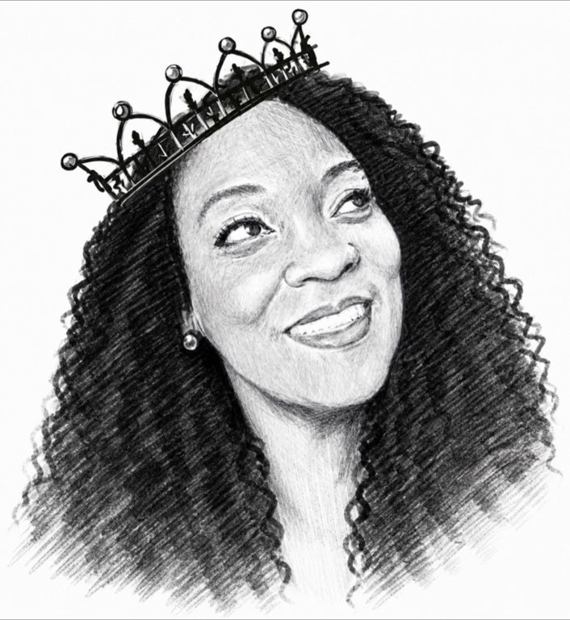

Our Foundation
A Legacy of Strength
Honoring Carrie Morris Scott, the matriarch whose faith, dignity, endurance, and love helped shape the standard.

Meet the Founder · The Face Behind the Codes
Founder · Author · Survivor · Mentor
Known as the Queen of Acronyms, Felicia transforms personal survival into a language of healing and service. As Founder and CEO of Behind the Showcase, LLC, she brings together community education, Mental Health First Aid instruction, youth-program support, and curriculum development.
My crown may tilt, but it never falls.
Legacy · Voice · Impact
From the women who planted the first seeds of strength to the survivor-centered resources helping others reclaim their voices today.
Our Foundation
Honoring Carrie Morris Scott, the matriarch whose faith, dignity, endurance, and love helped shape the standard.
Her Story
A truth once carried in silence becomes a voice for peace, protection, and purposeful healing.
Survivor Advocacy
Freedom from silence. Love beyond survival. Awareness that creates change. Growth that reclaims strength.
Statewide Recognition
Felicia Jenkins was recognized for teaching the most Mental Health First Aiders in Louisiana, helping more people recognize, understand, and respond to mental health and substance-use challenges.
Keynotes, panels, and facilitated conversations for conferences, churches, schools, and community events.